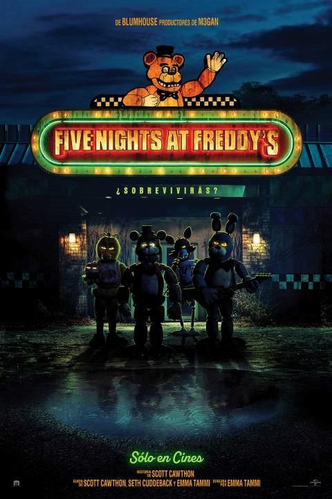
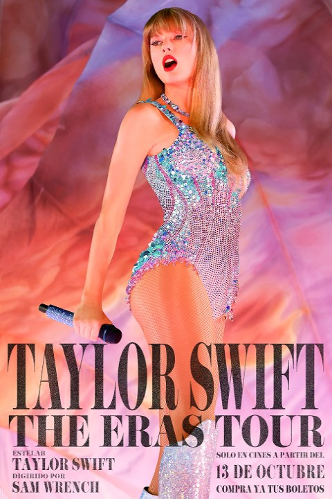
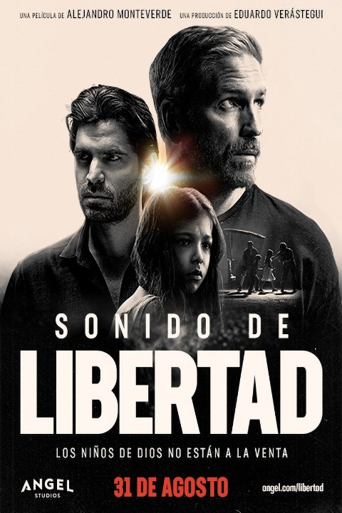

Bienvenido a la cartelera
Estas son las peliculas disponibles
-

Saw X
Comprar boletos
Sinopsis: John Kramer (Tobin Bell) está de vuelta. La entrega más perturbadora de la franquicia de SAW explora el capítulo nunca antes contado del juego más personal de Jigsaw. Toma lugar entre los eventos ocurridos de SAW I (El juego del miedo) y SAW II (El juego del miedo 2), un enfermo y desesperado John viaja a México por un arriesgado y experimental procedimiento médico con la esperanza de encontrar milagrosamente una cura para su cáncer – solo para descubrir que toda la operación es una estafa y defrauda a los más vulnerables. Armado de un nuevo propósito, el infame asesino serial regresa a su trabajo, intercambiando papeles con los estafadores en su característico estilo visceral a través de tortuosas, trastornadas e ingeniosas trampas.
Duracion: 2hrs 0min -

Comprar boletos
Sinopsis: Un problemático guardia de seguridad empieza a trabajar en la pizzería Freddy Fazbear's. Mientras pasa su primera noche en el trabajo, se da cuenta de que el turno de noche en Freddy's no será tan fácil de sobrellevar.
Duracion: 1hr 49min Five Nights At Freddy's -  Taylor Swift: The Eras Tour Comprar boletos
-  Sonidos de libertad Comprar boletos
- El Exorcista: Creyentes Comprar boletos
- Sin Aire Comprar boletos
Sinopsis: ¡El fenómeno cultural continúa en la pantalla grande! Sumérgete en esta experiencia cinematográfica de este concierto único en la vida. Podrás disfrutarlo con una vista impresionante de la gira histórica desde la pantalla grande. ¡Se recomienda usar la vestimenta de Taylor Swift Eras y tus friendship bracelets!
Duracion: 2hrs 49min
Sinopsis: Narra la historia de Tim Ballard, un ex Agente de Seguridad Nacional de Estados Unidos que dejó su trabajo para dedicar su vida, sumergiéndose en el submundo del tráfico de personas a lo largo de Latinoamérica, a intentar salvar las vidas de cientos de niños.
Duracion: 2hrs 10min
Sinopsis: Hace exactamente 50 años, la película de terror más aterradora de la historia llegó a las pantallas, impactando a la audiencia de todo el mundo. Este año, en octubre, comienza un nuevo capítulo. De Blumhouse y el director David Gordon Green, quienes rompieron el statu quo con la resurrección de la franquicia de Halloween, llega "El Exorcista: Creyentes". Desde la muerte de su esposa embarazada en un terremoto en Haití hace 12 años, Victor Fielding (ganador del Tony y nominado a los Premios de la Academia®, Leslie Odom Jr.; Una noche en Miami y Hamilton) ha criado a su hija Angela (Lidya Jewett; Chicas buenas) por su cuenta. Pero cuando Angela y su amiga Katherine (la recién llegada Olivia Marcum) desaparecen en el bosque y regresan después de tres días sin ningún recuerdo de lo que les ocurrió, se desencadena una serie de eventos que obligarán a Victor a enfrentarse a lo peor del mal, aterrorizado y desesperado, buscará a la única persona que ha presenciado algo similar antes: Chris MacNeil.
Duracion: 2hrs 0min
Sinopsis: Un viaje de buceo en aguas profundas en uno de los lugares más remotos del mundo se convierte en una lucha por la supervivencia para las hermanas Drew y May cuando un deslizamiento catastrófico envía rocas rodando al mar. Después de ser golpeada por la avalancha de rocas, May yace ahora en lo profundo bajo la superficie, atrapada por escombros e incapaz de moverse. Con niveles peligrosamente bajos de oxígeno, le corresponde a Drew luchar por la vida de su hermana. Ella debe arriesgar su propia vida y estar dispuesta a pagar el máximo sacrificio. Sin ayuda a la vista, el tiempo se agota rápidamente...
Duracion: 1hrs 30min